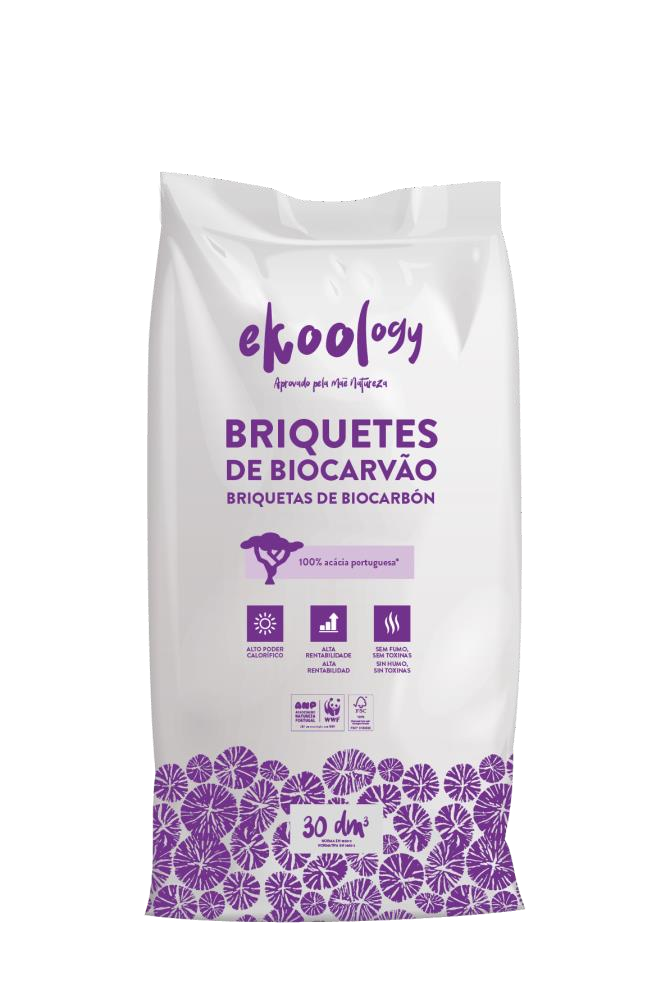
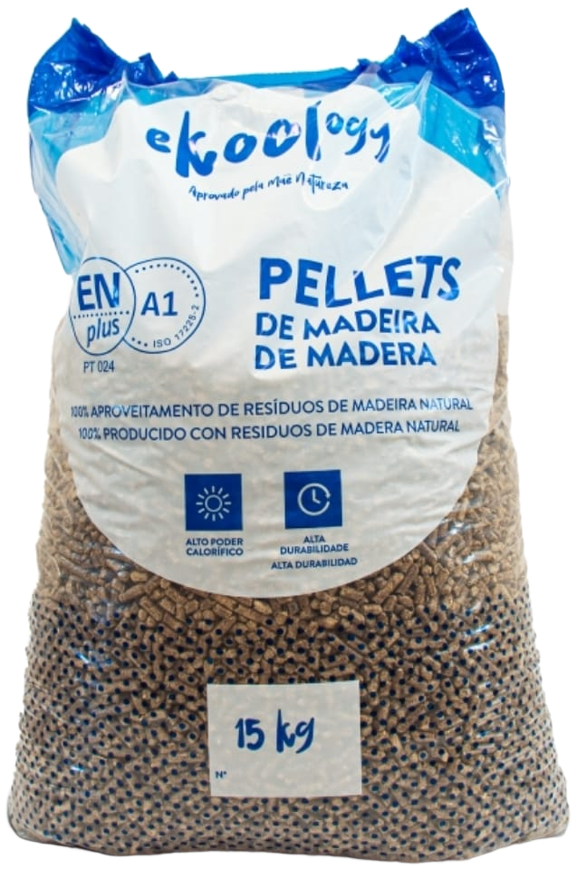
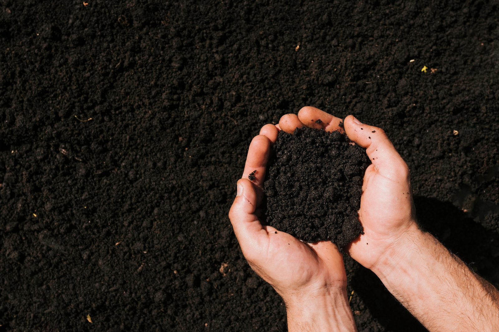
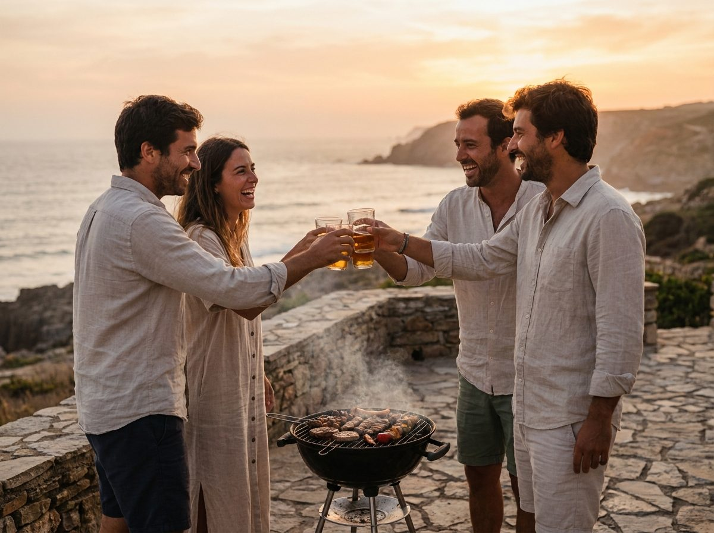

The EKOOLOGY family
Products with the forest inside.
From the embers in your grill to the warmth of your home: biochar, briquettes and pellets — always with Portuguese wood as raw material and Mother Nature as quality inspector.

From the embers in your grill to the warmth of your home: biochar, briquettes and pellets — always with Portuguese wood as raw material and Mother Nature as quality inspector.
Our classic: chunks of acacia biochar with +94% fixed carbon. Lights in 15–20 minutes, strong and stable embers, low smoke and no flying sparks. Ideal for home and professional grills.

The same purity in a compact, uniform format: predictable burning, constant heat and extended duration. The choice of professionals and long barbecues — ribs, chicken, smoked dishes.

The brand that heats your grill also heats your home. Biomass pellets produced at our dedicated plant in Penacova, with Europe's most demanding certification — ENplus® A1 — for stoves, fireplaces and boilers.

Our biochar also grows things. Inspired by the fertile Amazonian Terra Preta, KOOLBIOCHAR is a soil additive — Synthetic Terra Preta — combining acacia biochar with composted organic residues. Developed in co-promotion with the Coimbra School of Agriculture (Polytechnic of Coimbra), under a European R&D project.
Because we want everyone to enjoy this unique product, we produce the organic BBQ charcoal sold under Aldi's own brand, available in every store of the chain. On the outside it's Aldi's brand; inside it's the same Portuguese acacia biochar, from the same slow pyrolysis, in Penacova.
We're preparing the KoolNature accessories family — designed to last and to turn any griller into a master.
Wood wool and vegetable wax. They light the biochar without chemicals or odours.
Portuguese woods — oak, vine, cork oak — to give the smoke a national accent.
Protection up to high temperatures, long cuff, with the house brand.
A clean grill without loose wires. Honest tools that last.
Our own seasonings for fish, meat and vegetables — the master's finishing touch.
Gift box with biochar, firelighters, glove, salt and the printed Griller's Manual.
Want to be notified when they arrive? Leave us your email.

Every product on this page exists for the same moment: the sunset toast, the full table, the conversation that stretches until the embers die. Choose your format, call your people — we'll handle the fire.
Get inspired by the recipesEKOOLOGY is available at Aldi stores in Portugal and through an official network of 30 distributors nationwide — search your area on the Contact page. Professionals and retailers: talk to us directly.